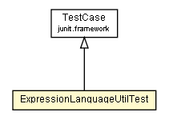

org.settings4j.util
Class ExpressionLanguageUtilTest

java.lang.Object
 junit.framework.Assert
junit.framework.TestCase
org.settings4j.util.ExpressionLanguageUtilTest
junit.framework.Assert
junit.framework.TestCase
org.settings4j.util.ExpressionLanguageUtilTest
- All Implemented Interfaces:
- Test
public class ExpressionLanguageUtilTest
- extends TestCase
Test ExpressionLanguage Syntax.
Checkstyle:OFF MagicNumber
|
Method Summary |
void |
testComplex()
TestCase for ExpressionLanguageUtil.evaluateExpressionLanguage(String, Map) Complex. |
void |
testLazyMapMatchPattern()
TestCase for LazyMap.decorate(Map, org.apache.commons.collections.Factory)
and MatchPatternTransformer. |
void |
testSimple()
TestCase for ExpressionLanguageUtil.evaluateExpressionLanguage(String, Map) HappyPath. |
| Methods inherited from class junit.framework.TestCase |
countTestCases, createResult, getName, run, run, runBare, runTest, setName, setUp, tearDown, toString |
| Methods inherited from class junit.framework.Assert |
assertEquals, assertEquals, assertEquals, assertEquals, assertEquals, assertEquals, assertEquals, assertEquals, assertEquals, assertEquals, assertEquals, assertEquals, assertEquals, assertEquals, assertEquals, assertEquals, assertEquals, assertEquals, assertEquals, assertEquals, assertFalse, assertFalse, assertNotNull, assertNotNull, assertNotSame, assertNotSame, assertNull, assertNull, assertSame, assertSame, assertTrue, assertTrue, fail, fail |
ExpressionLanguageUtilTest
public ExpressionLanguageUtilTest()
testSimple
public void testSimple()
throws Exception
- TestCase for
ExpressionLanguageUtil.evaluateExpressionLanguage(String, Map) HappyPath.
- Throws:
Exception - if an error occurs.
testComplex
public void testComplex()
throws Exception
- TestCase for
ExpressionLanguageUtil.evaluateExpressionLanguage(String, Map) Complex.
- Throws:
Exception - if an error occurs.
testLazyMapMatchPattern
public void testLazyMapMatchPattern()
throws Exception
- TestCase for
LazyMap.decorate(Map, org.apache.commons.collections.Factory)
and MatchPatternTransformer.
- Throws:
Exception - if an error occurs.
Copyright © 2008-2011. All Rights Reserved.